, if 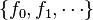 and 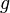 are continuous on some interval containing 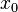, 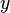 is unique and exists.
, if 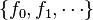 and 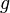 are continuous on some interval containing 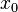, 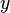 is unique and exists.CREATED BY JUTOH - PLEASE REGISTER TO REMOVE THIS LINE
Solving differential equations is not like solving algebraic equations. Not only are their solutions oftentimes unclear, but whether solutions are unique or exist at all are also notable subjects of interest.
For first order initial value problems, the Peano existence theorem gives one set of circumstances in which a solution exists. Given any point 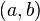 in the xy-plane, define some rectangular region 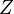, such that 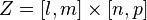 and is in the interior of . If we are given a differential equation 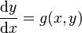 and the condition that 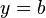when 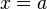, then there is locally a solution to this problem if 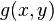 and 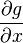 are both continuous on . This solution exists on some interval with its center at . The solution may not be unique. (See Ordinary differential equation for other results.)
However, this only helps us with first order initial value problems. Suppose we had a linear initial value problem of the nth order:
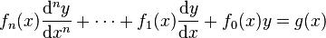
such that
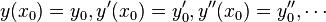
For any nonzero , if 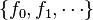 and 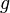 are continuous on some interval containing 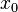, 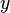 is unique and exists.